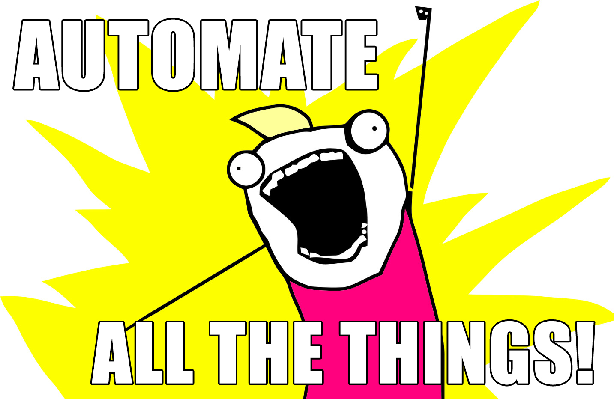

layout: true class: center, middle, cover --- #Использование Continuous Integration в WordPress разработке ##Nikita Galkin --- layout: false .left-column[ <img width="100%" src="//avatars0.githubusercontent.com/u/5930544?v=3&s=460"> ## Никита Галкин ] .right-column[ # Backend разработчик ## Люблю Highload, Opensource и Хакатоны ## Умею делить монолиты на микросервисы ## на PHP и Node.js ## в компания <img src="//s.developers.org.ua/img/announces/cik.png" height="28"> Ciklum (ThomasCook) <hr/> ## <svg aria-hidden="true" class="octicon octicon-mark-github" height="28" version="1.1" viewBox="0 0 16 16" width="28"><path d="M8 0C3.58 0 0 3.58 0 8c0 3.54 2.29 6.53 5.47 7.59 0.4 0.07 0.55-0.17 0.55-0.38 0-0.19-0.01-0.82-0.01-1.49-2.01 0.37-2.53-0.49-2.69-0.94-0.09-0.23-0.48-0.94-0.82-1.13-0.28-0.15-0.68-0.52-0.01-0.53 0.63-0.01 1.08 0.58 1.23 0.82 0.72 1.21 1.87 0.87 2.33 0.66 0.07-0.52 0.28-0.87 0.51-1.07-1.78-0.2-3.64-0.89-3.64-3.95 0-0.87 0.31-1.59 0.82-2.15-0.08-0.2-0.36-1.02 0.08-2.12 0 0 0.67-0.21 2.2 0.82 0.64-0.18 1.32-0.27 2-0.27 0.68 0 1.36 0.09 2 0.27 1.53-1.04 2.2-0.82 2.2-0.82 0.44 1.1 0.16 1.92 0.08 2.12 0.51 0.56 0.82 1.27 0.82 2.15 0 3.07-1.87 3.75-3.65 3.95 0.29 0.25 0.54 0.73 0.54 1.48 0 1.07-0.01 1.93-0.01 2.2 0 0.21 0.15 0.46 0.55 0.38C13.71 14.53 16 11.53 16 8 16 3.58 12.42 0 8 0z"></path></svg> [galk-in](//github.com/galk-in/) <img src="//www.npmjs.com/static/images/npm-logo.svg" height="28" alt="npm logo"> [galkin](//www.npmjs.com/~galkin) <img src="//upload.wikimedia.org/wikipedia/en/thumb/9/9f/Twitter_bird_logo_2012.svg/1259px-Twitter_bird_logo_2012.svg.png" height="28"> [galk_in](//twitter.com/galk_in) <img src="//www.hoeghautoliners.com/_public/theme-hoegh/img/svg/logo-linkedin.svg" height="28"> [nikitagalkin](//ua.linkedin.com/in/nikitagalkin) ] ---  --- name: inverse layout: true class: center, middle, inverse --- # Сначало построение процесса, # только потом его автоматизация. --- layout: false # Целевая аудитория доклада: ## 1. Бизнес ## 2. Plugin/Theme разработчики ## 3. Site разработчики ## 4. Фрилансеры --- layout: false # Типичные щаги: ## 1. Постановка задачи (описание нового функционала). ## 2. Написание тестов описывающих функционал. ## 3. Реализация функционала. ## 4. Автоматическая сборка всего проекта и запуск тестов. ## 5. Формирование отчета. ## 6. Доставка функционала. --- # Постановка задачи. # Используйте User story! ## As ... ## I want to ... ## So that ... --- # Постановка задачи. Инструменты ## Issue tracker ## Jira ## Redmine ## Assana ## Trello --- # Типы тестов: ## 1. Unit: phpunit, phpspec ## 2. Integration: WP-CLI ## 3. end-to-end: selenium --- <img src="./pictures/tdd.jpg" height="80%"> --- # Реализация функционала. Разные типы окружения. ## Develop ## Integration ## QA ## Stage ## Production --- # Реализация функционала. Разные типы окружения. ## Vagrant ## Docker ## WP plugin Duplicator ## WP plugin DB Migrator --- # Реализация функционала. Система контроля версий ## github ## gitlab ## bitbuckets --- # Build ## Travis ## Jenkins ## GitLab CI ## ... --- # Travis.yaml <pre><code>``` sudo: false language: php cache: apt: true directories: - $HOME/.composer/cache - $HOME/.rvm/gems # - /tmp/wordpress/src/wp-content/plugins/buddypress/node_modules php: - 5.2 - 5.3 - 5.4 - 5.5 - 5.6 - 7.0 # WordPress comes from the Git mirror, where 'master' mirrors svn 'trunk' and # x.y mirrors the latest from the x.y branch env: - WP_VERSION=master BP_TRAVISCI=travis:phpunit - WP_VERSION=4.5 BP_TRAVISCI=travis:phpunit - WP_VERSION=4.4 BP_TRAVISCI=travis:phpunit - WP_VERSION=4.3 BP_TRAVISCI=travis:phpunit - WP_VERSION=4.2 BP_TRAVISCI=travis:phpunit matrix: ```</code></pre> --- layout: true class: center, middle, inverse --- #А что потом? #Continuous delivery!